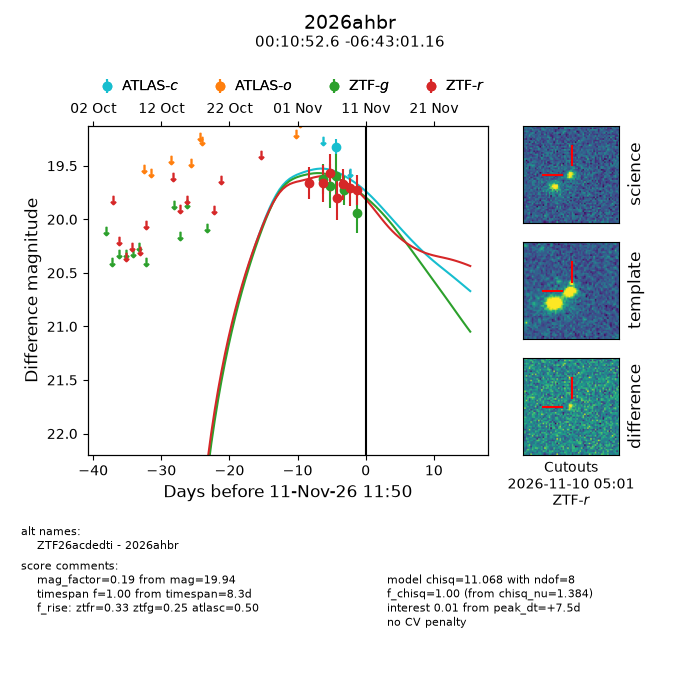
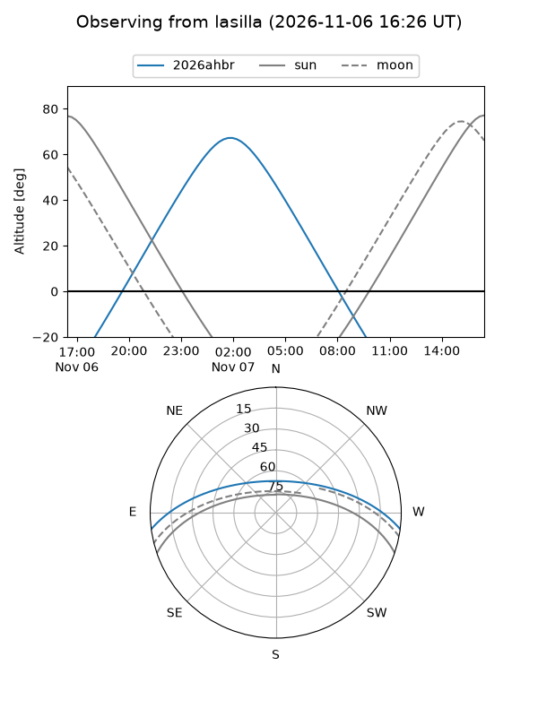
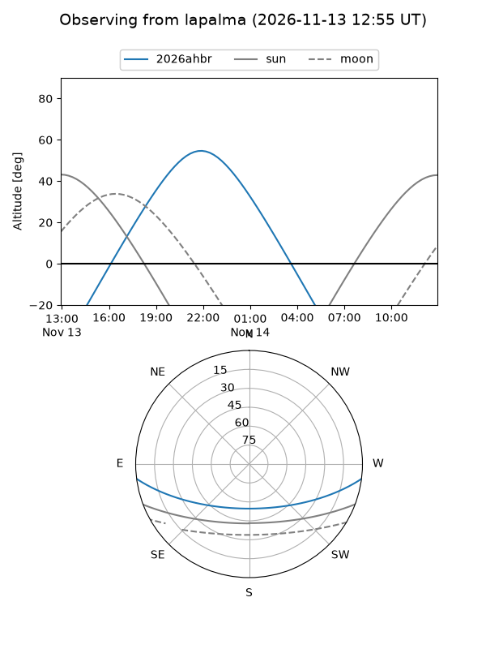
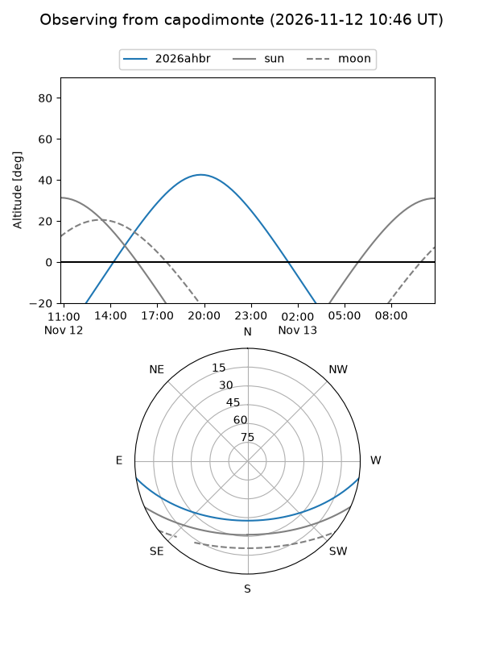
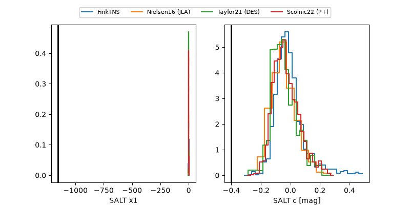

2026ahbr
Target 2026ahbr at 2026-11-11 11:52
Aliases and brokers:
FINK-ZTF: ztf.fink-portal.org/ZTF26acdedti
Lasair-ZTF: lasair-ztf.lsst.ac.uk/objects/ZTF26acdedti
ALeRCE-ZTF: alerce.online/object/ZTF26acdedti
YSE-PZ: ziggy.ucolick.org/yse/transient_detail/2026ahbr
TNS name: wis-tns.org/object/2026ahbr
Direct TNS query: direct search
alt names
ZTF26acdedti (ztf,fink_ztf)
2026ahbr (tns,yse)
Coordinates:
equatorial (ra, dec) = 2.7193,-6.71699
equatorial (HMS+DMS) = 00:10:52.64,-06:43:01.16
galactic (l, b) = (95.8319,-67.42941)
Flags:
peak dt: +7.5
Photometry:
last atlasc=19.33, ztfg=19.94, ztfr=19.73
1 atlasc, 5 ztfg, 7 ztfr detections
Lightcurve

Visibility



Additional plots
